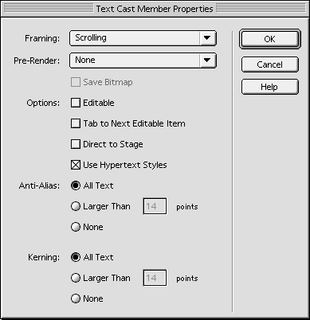

Hyperlinks in Director 7by Zac Belado |
|
|
Director 7 added many interesting new features. One of the more useful is the ability to add hyperlinks to Text members. This allows you to quickly add HTML-like capabilities to your projects with a minimum of code. Hyperlinks can be added to a Text member in one of two ways; either using Lingo to manually attach the hyperlinks to words or characters or by setting the Text member's .html property to HTML content that uses standard anchors ( <a href="../someFile.html"> ). Both approaches have their benefits and drawbacks and are, ultimately, suited for very different purposes. A sample movie is available for download in Mac or PC format. This is a Director 7 movie. It might be useful if you downloaded the movie now and used it as a reference while you read the article. Using LingoIn order for you to be able to display hyperlinks in a Text member the Use Hypertext Styles checkbox in the Member Options dialog needs to be checked.  Alternately can set this in Lingo by setting the useHypertextStyles property of the member to TRUE. You can still use hyperlinks with this property set to FALSE (or turned off) but you then have to manually check the hyperlink ranges to see if they have been clicked...and the idea here is to make this process as easy as possible to implement and use. Before you actually start to add and use hyperlinks you need a behavior to respond to the hyperlink clicked event and process the information in the hyperlink itself. Happily this is fairly easy to do. Start up Director and then draw a Text member on the stage. Create a new behavior and add the following code: property pMemberRef on beginsprite me pMemberRef = sprite(me.spriteNum).member end on hyperLinkClicked me, theHyperlink, range put theHyperlink put pMemberRef.text.char[range[1]..range[2]] end This is a very basic hyperlink handler but it illustrates everything you need to know to create more robust code. The event your code needs to trap is the hyperlinkClicked event. The event carries two pieces of information with it. The data in the hyperlink and the range (in characters) of the link that was clicked. The sample behavior simply displays the hyperlink contents in the Message Window along with the string that the hyperlink is attached to. This will be enough for you to use during the following Lingo experiments we'll go through. Drag this behavior onto your Text member on stage. Once you have ensured that the useHypertextStyles has been set to TRUE and our display behavior is applied to the Text member on stage we can start experimenting. Open the message window and add some data to the Text member like so: member(1).text = "This is the first line" ¬ &RETURN & "This is the second line" You'll need to substitute member(1) for the actual member in the cast. The .hyperlink and .hyperlinks properties are member properties and not sprite properties. This is important to remember. Now let's add a hyperlink to the text. In the Message window enter: member(1).word[4..5].hyperlink="firstLink" You should see the words "first line" turn blue and become underlined. Now play the movie and move the mouse over the hyperlink you just created. The cursor should turn into a pudgy hand and if you click on the link you should see... -- "firstLink" -- "first line" ...appear in the Message Window. Hyperlinks are applied to chunk expressions. "What's a chunk expression?" you ask. Well, a chunk expression is any Lingo expression that evaluates to a string. Typically this means any Lingo expression that contains line, char or word. So... thisMember.word[1] ...is a chunk expression, as is... char 3 of word 2 of line 1 of member "foo" You have a great deal of flexibility when adding hyperlinks to a Text member. You could add them on a character by character basis... member(1).char[2..15].hyperlink = "a new link" by lines... member(1).line[1].hyperlink = "hyperlinks abound" ..or even with a combination of commands... member(1).line[1].word[2].char[2].hyperlink = ¬ "a very small hyperlink" Once you have set the hyperlinks in a Text member, you can easily get a list of them by testing the member's .hyperlinks property. Please note the "s". This property is a list of character ranges of each hyperlink. member(1).word[4..5].hyperlink="firstLink" member(1).word[8..10].hyperlink = "another link" put member(1).hyperlinks -- [[13, 22], [32, 46]] There are two things you should pay attention to when using Lingo to set hyperlinks. First, if you set two hyperlinks that are separated by only white space (spaces, carriage returns, etc.) then Director will merge them into one hyperlink using the .hyperlink setting of the second link. So if you enter... member(1).char[4..5].hyperlink="firstLink" member(1).char[6..9].hyperlink = "another link" put member(1).hyperlinks -- [[4, 9]] ...you will get only one hyperlink. This only occurs if you set the links using character ranges. If you use words or lines, it does not cause the same problem. This is a bug and will most likely be resolved in Director 8. Until then, simply avoid setting links with character ranges if they need to be adjacent. This does not happen if you set the member's hyperlinks using HTML. The second problem is that the hyperlinks in a Text member will be reset if you set the text in that member. Try this: member(1).text = "This is the first line" ¬ &RETURN & "This is the second line" member(1).char[4..5].hyperlink="firstLink" member(1).char[6..9].hyperlink = "another link" put member(1).hyperlinks -- [[4, 9]] member(1).text = "This is the first line" &RETURN ¬ & "This is the second line" put member(1).hyperlinks -- [] Director has removed the hyperlinks. There are a few ways around this and the solutions depend on whether you are simply setting links in an existing piece of text or generating the text programatically. The first work around is to build the text in a member in one pass and then build the hyperlinks in another. This works very well if you are building the text and hyperlinks from an external data source (a database or external text file). The second way is to add links to an existing Text member (with the text already in it) or by setting the .text property initially and then adding the links. This is a less than optimal solution as it requires you to predetermine the links and then store that data. Which is tedious. It also makes it more difficult to edit the text or hyperlinks since the links will have to be recalculated. An alternative solution is to append text to the Text member using the put...after and put...before Lingo commands. This does work very well but I do not like using it for several reasons. First it is older Lingo syntax which requires you to mix and match syntax styles. As well the syntax is rather peculiar, especially if you are getting used to or are very comfortable with the new dot syntax. member(1).text = "a line" & RETURN & "another line" put RETURN & "a third line" after member 1 To my mind, member 1 is a direct reference to an actual member in the cast and not to the text of a member. Hence my personal dislike for this particular syntax. But don't for a second let that stop you from using it if you feel comfortable with that style of coding. The final solution involves using some undocumented Lingo to circumvent the problem entirely. Geeky and useful at the same time. There are three undocumented commands that we have available -- setContents, setContentsAfter and setContentsBefore -- but we will only be able to use two of them, as you will see. Credit goes to the ever-resourceful Andrew White for finding these very useful commands. As usual you should always be careful when using undocumented commands as there is no guarantee that they will continue to be supported in Director or even work in the manner they currently do. The commands work in much the manner that you would expect. setContents replaces the text in the text (or field) member, setContentsAfter appends data to the member and setContentsBefore prefixs data to the member. Their use in relation to hyperlinks is that they do not reset the hyperlinks in a Text member when you use them to add or change text. For example: member(1).text = "This is the first line" ¬ &RETURN & "This is the second line" member(1).word[4..5].hyperlink = "first hyperlink" member(1).word[9..10].hyperlink = "second hyperlink" put member(1).hyperlinks -- [[13, 22], [36, 46]] That will set two hyperlinks. We know from our previous example that if we set the text of this member again it will remove the hyperlinks. But if we add a line of text to the Text member using setContentsAfter the links will remain. thisLine = RETURN & "This is the third line" member(1).setContentsAfter (thisLine) Notice that the original two hyperlinks are still there. This works even if we add text to the beginning of the member. newLine = "this is a line at the beginning" & RETURN member(1).setContentsBefore (newLine) Sadly though, using the setContents function will still replace all the links, so there is no easy way to replace the contents of a text member short of storing the hyperlinks and then rebuilding them again. One way to avoid the problems typically associated with using undocumented Lingo is to wrap the commands in a behaviour. That allows you to still use the commands (in an altered format) but also gives you a modicum of safety as you simply need to rewrite the behavior if the commands "disappear" in the next version of Director. A very quick behaviour that would accomplish this would be: property pMyMember on beginSprite me pMyMember = sprite(me.spriteNum).member end on append me, text if voidP (text) then exit if NOT stringP(text) then exit pMyMember.setContentsAfter (text) end on prefix me, text if voidP (text) then exit if NOT stringP(text) then exit pMyMember.setContentsBefore (text) end on replace me, text if voidP (text) then exit if NOT stringP(text) then exit pMyMember.setContents (text) end If you placed this behavior on a Text member and wanted to add some text to the end of the existing data you would use: sprite(1).append ("newText")
Notice that since these commands are accessed via a behaviour they require a sprite reference and not a member reference as all our other examples have used. So to use the functions you would have to call them like so newLine = RETURN & "This is another line of text" sprite(1).append (newLine) You could also use this behaviour to wrap the put...after and put..before syntax into a format that was more consistent with Director 7's new dot syntax. Note that even though the examples have used references to all the text in a member, you can actually use these commands to append, prefix or replace any chunk expression. So the following... member(1).word[1].setContentsAfter("new word")
... is also a valid way add the words "new word" after the first word of a member. Pros and consUsing Lingo to set hyperlinks is useful if you have an indeterminate amount of data (you don't know how much) or if you need to test the data to determine what types of data will have hyperlinks added to them. It is also very fast. Compared to the HTML method (see below) it is easily twice as fast. This technique does not, in my mind, work well if you have static text or you want to access text via the web (either from a CGI or a static HTML file.) Using HTMLBut the fun doesn't stop there. You can also set a Text members hyperlinks using HTML. This is done by simply creating an HTML file that contains your text and using HTML anchors to define the links. In exactly the same way that you would write an actual HTML file. Let's assume for a second that we had the following HTML data: <html> <head> <title>A plain test page</title> </head> <body bgcolor="#FFFFFF"> <p> This is some text with a <a href="foo">hyperlink</a><br> And this is a second line with <a href="some hyperlink text">yet another link</a>. </body> </html> This data is stored in a field called HTMLData. If we wanted to use this as the source of hyperlink data in a Text member (member 1 perhaps) we could simply set the Text member's .html property... member(1).html = member("HTMLData").text
...and be done. Director's HTML rendering engine would parse the HTML data and create the text and the hyperlinks for you. This process is slower than generating the hyperlinks yourself using Lingo. Most of this has to do with the overhead generated by the HTML rendering engine. But the process has some added benefits that make up for this. Using HTML data allows you to access data remotely from a web server without having to do any additional parsing (there is an example of this in the sample movie). You can get data from a CGI and then use that to generate hyperlinks using Lingo, but you would first have to parse the data and clean it up. HTML doesn't have this restriction. Additionally you can use data formatted by other members of your team (read non-programmers) allowing others to modify the data displayed in your movies without having to actually open the movies up. They can also add formatting to the text outside of Director. The HTML files that you use for this purpose must be valid HTML files. Meaning that they have to have well-defined <HTML>, <HEAD> and <BODY> tags. This isn't too much of a problem if you are retrieving files from a web server but if you are generating the HTML in your Director movie then you will have create the proper header and footer elements yourself. A very easy way to facilitate this is to create two field members with the HTML header and footer information. Then you can use the text in those fields to build your HTML data. Basic HTML header: <html> <head> <title>A plain test page</title> </head> <body bgcolor="#FFFFFF"> Basic HTML footer: </body> </html> For the purposes of our example let's assume that you have a set of data stored in a field in this example (but it could come from almost anywhere) that is a list of property lists. Each property list has a #link and a #text property. The #text property is a set of HTML tags and text and the #link property is either blank, to indicate no hyperlink or a string to indicate that a link needs to be attached to the accompanying text. This is the format used in the sample movie's first HTML example. So if that data is stored in two fields, HTMLHeader and HTMLFooter, a simple handler to build HTML data from that list would look like so. on buildHTMLLinks
cursor 4
linkList = value(member("linkText").text)
thisMember = member ("html_temp")
-- add the header
thisMember.text = member("html_header").text
thisMember.text = thisMember.text & RETURN
-- now go through each element in the link list
repeat with aLinkSet in linkList
addText = ""
thisLink = aLinkSet.link
thisText = aLinkSet.text
if thisLink <> "" then
addText = "<a href=" & QUOTE & thisLink & ¬
QUOTE & ">" & thisText & "</a>"
else
addText = thisText
end if
thisMember.text = thisMember.text & addText
end repeat
-- now add the footer
thisMember.text = thisMember.text & RETURN ¬
& member("html_footer").text
member ("html").html = thisMember.text
cursor 0
end
The true beauty of using HTML is that the HTML data itself can contain formatting information. So while you are building your links you can also be formatting the text that the user will eventually see. BODY attributes, except for bgcolor, are ignored. So you can set the background color of the text member by setting the colour in the bgcolor attribute of the BODY tag but you won't be able to set the link colors that way. If you want more (or even some) control over the appearance of the links, then have a look at James Newton's Custom HTML Style movie on his site. Non-string hyperlinksHyperlinks, especially those in HTML data, don't need to be URLs or even just strings. You can make them integers, floats, or even property lists. The Director HTML renderer will not complain in the slightest if you send it HTML data with anchors that look like <a href="[#link:thisText, #value:23]">Link #1</a> The only catch is that the hyperlinks are stored and returned as strings. So if you want to get the property list (or whatever datatype you used) you will have to check the contents of the hyperlink using the value() function. If the hyperlink is just a string, then value() will not be able to evaluate it and will return VOID. Any other type of data will get "converted" to its correct value. thisLink = "[#link:thisText, #value:23]" thisValue = value(thisLink) put thisValue -- [#link: <Void>, #value: 23] put thisvalue.ilk -- #propList thisLink = "aString" put value (thisLink) -- <Void> This can be added to the basic hyperlink behavior we used earlier. property pMemberRef on beginsprite me pMemberRef = sprite(me.spriteNum).member end on hyperLinkClicked me, theHyperLink, range newValue = value(theHyperLink) if voidP(newValue) then newvalue = theHyperLink put newValue end This opens up numerous possibilities. Summing upAs you can see, not only are hyperlinks quite easy to use and create but they are also very flexible. You can build them using Lingo or with HTML data and you can also generate them using data from external sources. The sample movie includes examples of building hyperlinks from property lists (via HTML), via lists (using preset text), and also getting HTML data from an external server. The sample movie includes enough code and sample data to cover numerous combinations, so download a copy and have some fun testing out new combinations and seeing how you can adapt them to your work. Zac Belado is a programmer, web developer and rehabilitated ex-designer based in Vancouver British Columbia. He is the developer and technical editor for Director Online the primary web resource for users of Macromedia Director and the developer of the recently unveiled news site developer[nation]. He has been involved in multimedia and web based development producing work for clients such as Levi Straus, Motorola and Adobe Systems. As well, he has written for the Macromedia User’s Journal and been a featured speaker at the Macromedia User’s Convention. When not doing web related work he writes potentially libelous posts for his errata mailing list and poetry which can be found in the usual place. |